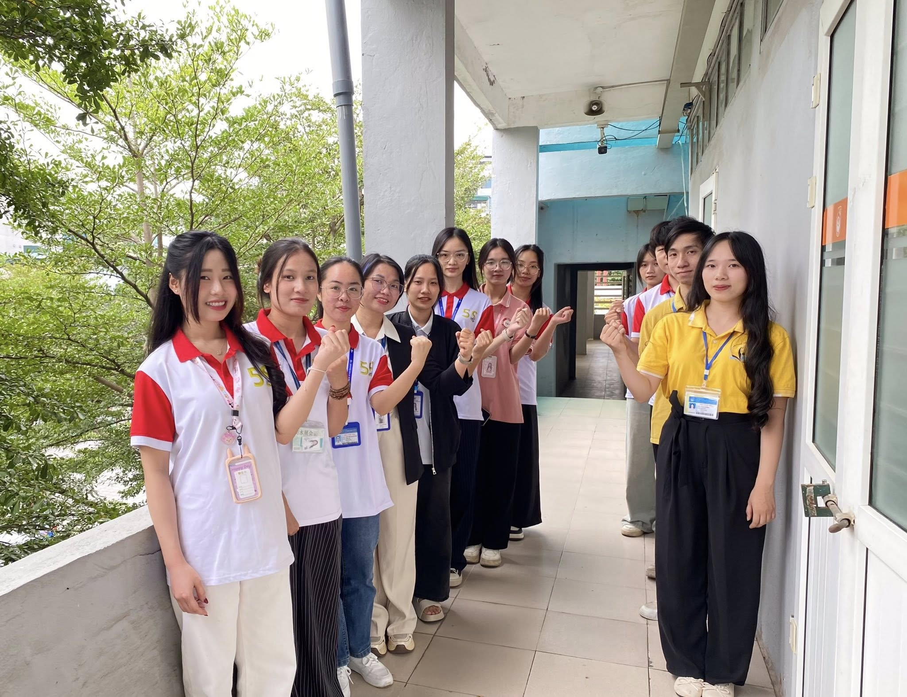
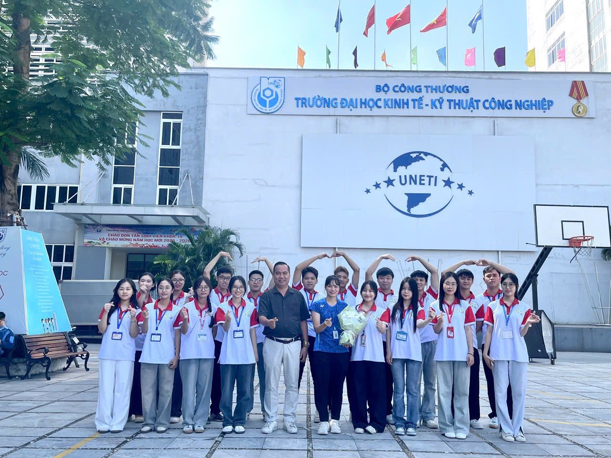
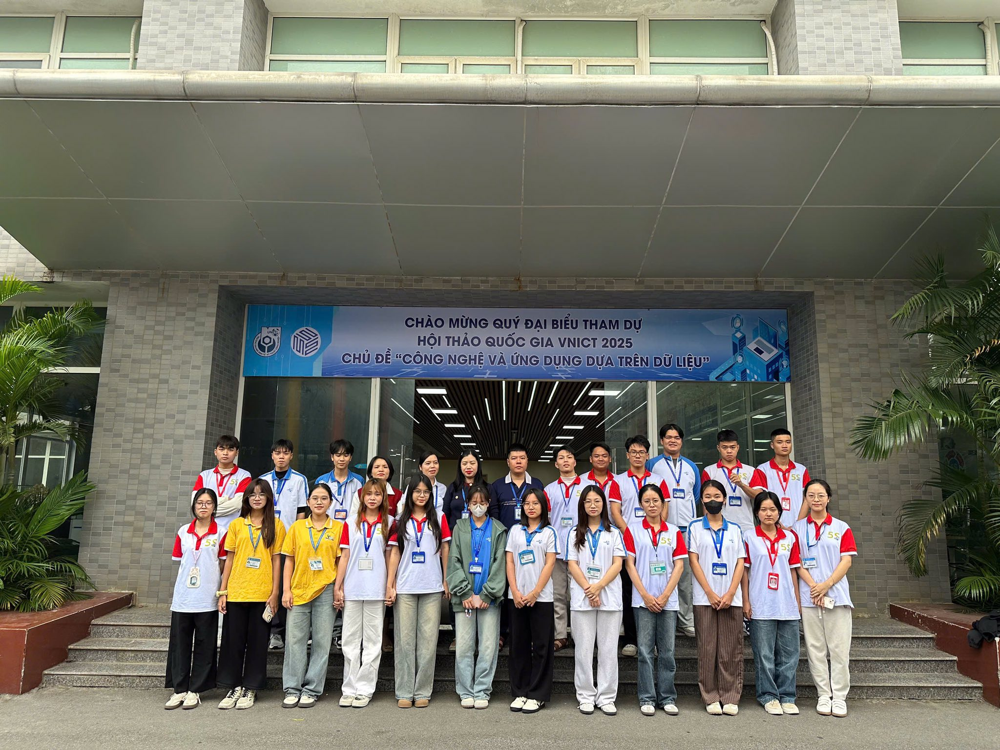
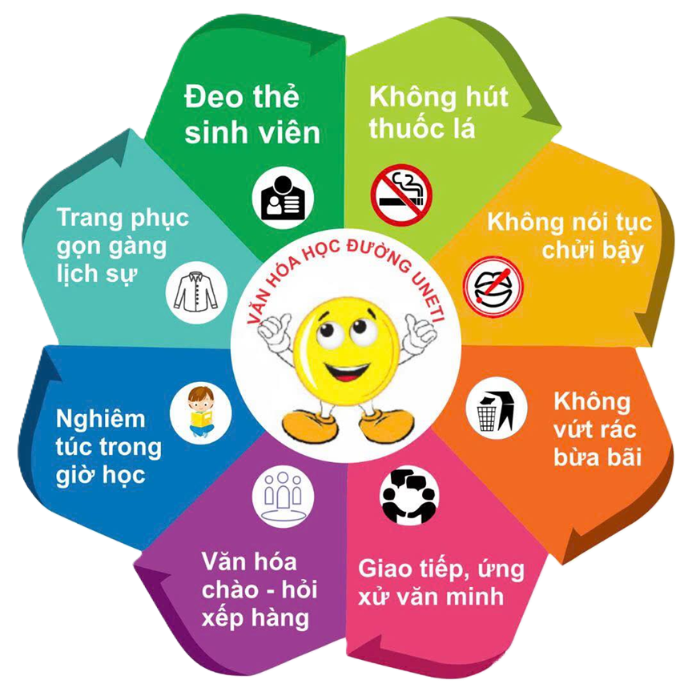
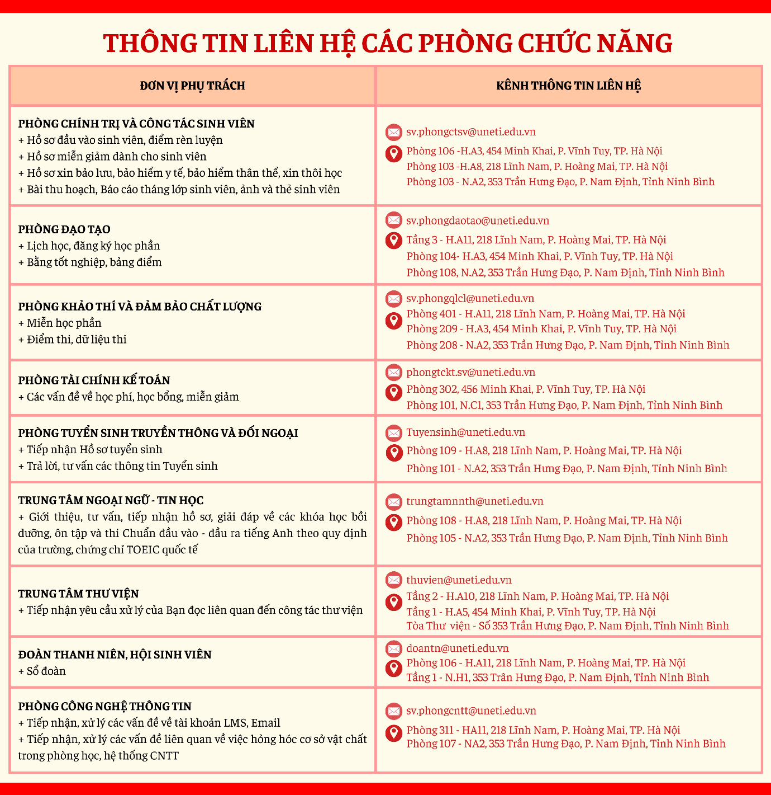
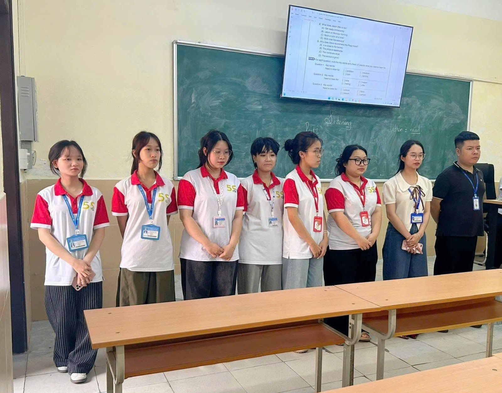
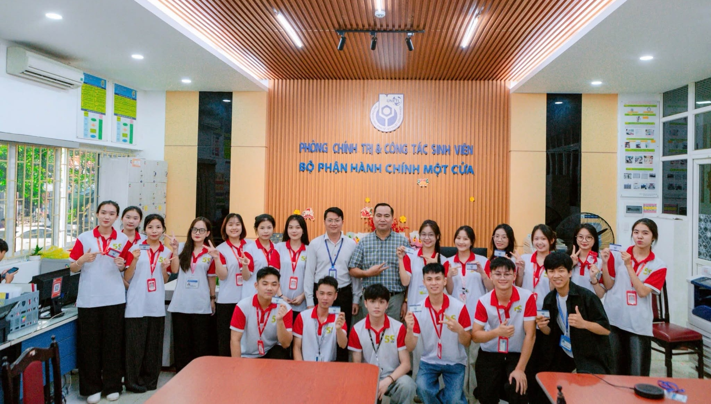

Đeo thẻ sinh viên
Thể hiện tác phong nghiêm túc và trách nhiệm khi đến trường.

Chuẩn mực trong ứng xử, chuyên nghiệp trong hành chính và chủ động lan tỏa những điều tốt đẹp.
Khám phá 8 nguyên tắc vàng


Văn hóa học đường Sinh viên UNETI được triển khai theo mô hình quản lý 5S, hướng tới môi trường học tập văn minh, hiện đại và giàu tinh thần trách nhiệm.
Mỗi hành động nhỏ như đeo thẻ, xếp hàng, giữ gìn vệ sinh hay giao tiếp lịch sự đều góp phần hình thành phong cách ứng xử chuẩn mực của người học UNETI.

5S + Hoa 8 cánh Nhận thức đúng · Hành động đẹp · Lan tỏa tích cựcVăn minh bắt đầu từ những lựa chọn đơn giản trong học tập và sinh hoạt.
Thể hiện tác phong nghiêm túc và trách nhiệm khi đến trường.
Bảo vệ sức khỏe và giữ môi trường học tập trong lành.
Không nói tục, chửi bậy; tôn trọng người đối diện.
Không xả rác bừa bãi, cùng chăm sóc không gian chung.
Chủ động lắng nghe, hợp tác và cư xử lịch sự.
Tuân thủ trật tự nơi công cộng và tôn trọng cộng đồng.
Nghiêm túc trong giờ học và thực hiện đúng quy định.
Gọn gàng, phù hợp và thể hiện thái độ tôn trọng.
Sinh viên có thể đăng ký thủ tục qua ứng dụng UNETI Online, website support.uneti.edu.vn hoặc nộp trực tiếp theo hướng dẫn tại khu vực Một cửa.

Tình nguyện, tuyên truyền và hỗ trợ là cách SCC biến văn hóa học đường thành hành động cụ thể.

Phối hợp cùng Nhà trường nhắc nhở và lan tỏa các chuẩn mực 5S.

Giải đáp, hướng dẫn sinh viên trong các hoạt động học tập và hành chính.
Cùng nhau tạo nên môi trường thân thiện, chuyên nghiệp và sẻ chia.
Văn minh từ nhận thức – hành động từ trái tim của mỗi người trẻ UNETI.